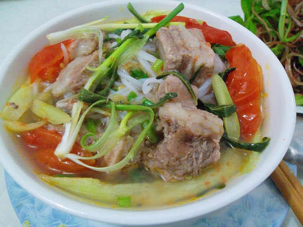

Bún Xương

Description
"Bún xương heo" is an easy-to-eat, easy-to-cook, and nutritious dish. A bowl of "bún xương heo" with fragrant and flavorful broth, tender and sweet pork meat will help your family have a delicious breakfast.
Ingredients
- 1 kg bún tươi
- 1 kg xương heo
- 300g chả lụa
- 100g giá
- 3 cây sả
- 1 củ hành tây
- 1 củ gừng tươi
- Rau sống, hành lá, ngò, tỏi, hành tím
- Gia vị: đường, muối, bột ngọt, nước mắm
Steps
- Xương heo chặt miếng vừa ăn, rửa sạch.
Sả cây bỏ lớp lá ngoài, rửa sạch, đập dập. Đem hành tây và gừng nướng cho thơm. Sau đó gừng cạo vỏ, cắt làm nhiều khúc. Hành tây bỏ vỏ, cắt miếng to. Tỏi, hành tím băm nhỏ.
- Cho nồi lên bếp, phi thơm hành, tỏi băm, cho xương vào xào lăn qua cho thơm. Sau đó đổ nước ngập xương để hầm.
Cho hành tây, gừng đã nướng, sả vào nồi nước dùng.
Hầm xương từ 60 phút đến 90 phút, khi xương chín mềm, nêm đường, muối, nước mắm, bột ngọt cho vừa ăn thì tắt bếp.
- Khi ăn, cho bún tươi ra tô, gắp xương heo lên mặt bún, thêm vài lát chả lụa, hành lá, ngò, sau đó cho nước dùng vào. Ăn kèm với rau sống và giá. Món ăn ngon nhất khi được dùng nóng.